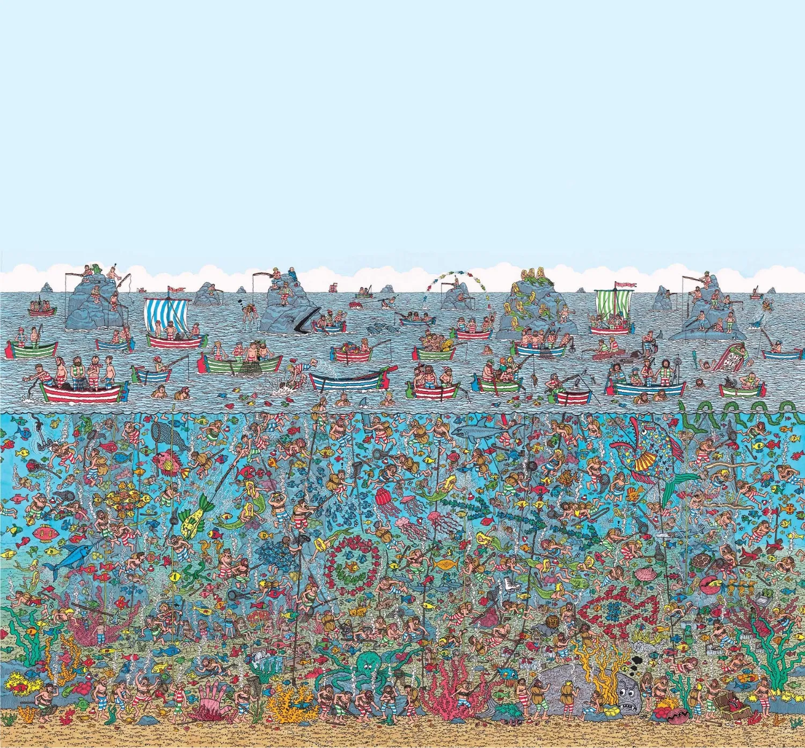
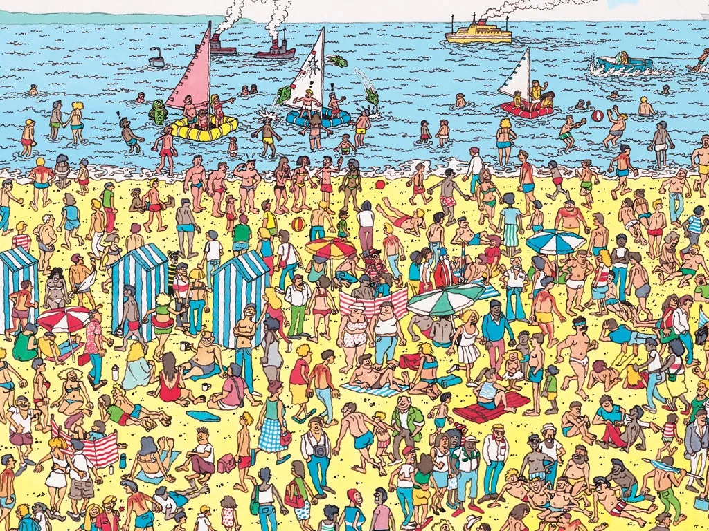

Motivation
Problem
The classic Where’s Waldo? books ask readers to find a small, distinctive character lost in a busy illustration. We want a system that automatically turns a natural photograph into a similar puzzle: the inserted character (Waldo) should sit in a convincing hiding place, not look pasted on. The key challenges are finding plausible locations from scene structure and visual complexity, and compositing with consistent lighting, scale, and occlusion so the result does not look obviously synthetic.
Importance/Interest
This project is engaging because it bridges advanced computer vision techniques with an engaging, interactive game experience. By integrating key components such as image blending, segmentation, and object detection into a unified pipeline, it serves as a practical testbed for building a seamless end-to-end system.
Unlike traditional Where’s Waldo puzzles—of which there are only around 100—our approach enables the generation of virtually unlimited puzzles. Users can even create personalized versions by uploading their own images through our website, transforming passive gameplay into an interactive and customizable experience.
Beyond the technical aspect, the project also opens up interesting possibilities in game design. For example, it could be extended into formats such as a daily challenge similar to Wordle or a time-based puzzle mode. This combination of technical depth and creative gameplay makes the project both challenging and highly enjoyable to develop.
Reference: official books
Dense, playful scenes we take inspiration from.

